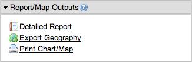
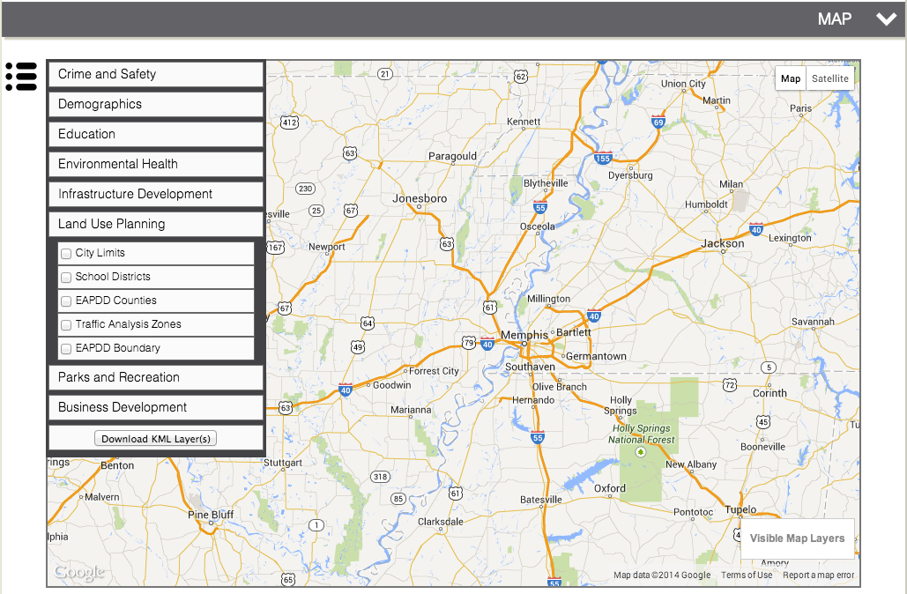
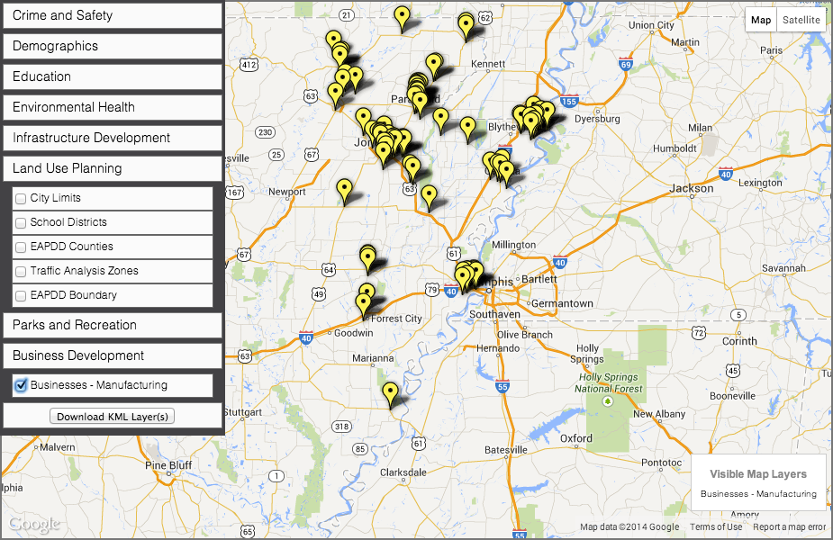

Identifying and Promoting a Homegrown Workforce
Having a population of workers that live and work in the same community is the cornerstone of building a sustainable place. The impact of a closer commmute can affect your environment, personal well-being, and bank account.
Workers who live closer to their job save time and gas money. Less hours in traffic mean more hours resting or enjoying time with your family. It also means you are spending less money on your vehicle and more on the things you would prefer to spend money on. Furthermore, staying closer to home means you are more likely to buy lunch or go shop nearby and support local businesses and the local tax base. Other benefits of closer commutes include improved air quality, lowered stress levels from less time in traffic, and having the option to walk or bike to work.
So, we know the benefits of a local or homegrown workforce, but how can we build, leverage, or support one?
The Department of Labor and The Employment and Training Administration offer a number of grants to help support initiatives designed to create more sustainable communities through increased options for commuters to work close to home. These grants are available to those communities that can show a viable need and opportunity for supporting a local workforce through industry and educational partners.
This tutorial will walk you through a three step process of how to do just that! First, we will demonstrate the local manufacturing capacity of a site. Then, identify local industry and educational partners. Last, we will view all of these layers in an interactive environment to understand more about our homegrown workforce. All you will need is Google Earth and the links on this webpage.
When you are ready to learn how to identify your homegrown workforce, click STEP ONE below.
Demonstrate Local Manufacturing Capacity
KML Showing Local Manufacturing Capacity in Forrest City, AR
By the end of this first step, you will be able to view the above image in Google Earth. To start, we are going to use OnTheMap from the US Census to collect our data. Click here to open OnTheMap in a new tab.
Start View of OnTheMap from the US Census
On the left side of the page, you will see various menus. In the menu box for "Search", enter the place of “Forrest City, AR”.
Text to Search
Now click the dropdown menu and change the search parameters to include only “Places (Cities, CDPs, etc.)”.
Category for Search
Now click the "Search" and you should see the results of your search. In this case we see “Forrest City city, AR”.
Search Results
Click “Forrest City city, AR” and the map will reflect our new selection.
Map Results
At the center of our selection area, is a pop-up box that gives up some options. Click the option to Perform Analysis on Selection Area to bring up settings for analyzing the area.

Analysis Settings
This menu has four columns: Home/Work Area, Analysis Type, Year, and Job Type. Make the following adjustments to the settings menu:
- Set the Home/Work Area to Home, because we are interested in finding where workers in our area live.
- Set the Analysis Type to Distance/Direction, because we are interested in finding the direction of where our workers work.
- Set the Year to 2011, because we are only interested in the most recent year.
- Set the Job Type to Primary Jobs, because that is the scope of job types that most interests us.
Click Go and you should now see the results of your new settings.
Analysis Results
Now we will want to refine our results by Industry Segment. At the top left of the menu you will see a Display Settings box.

Display Settings
Select All Workers > Industry Segment > Industry: Goods Producing
Refining Display Settings
The map should now automatically update to reflect your new analysis:
Updated Map Based off of New Display Settings
Now that we have our results, we will download a KML to be able to view this data in Google Earth. In the Report/Map Outputs box on the left side of the page, select Export Geography.
Export Geography
Now select the type of file we want to download. In this case, we want the KML.
Choose the Correct Export Format
Then choose the correct download type. In this case, want Download Geography Export.
Choose the Download Type
In a moment, your download will start. You can either view this file now in Google Earth, or wait until we have finished the analysis. Either way Step One is finished!
Identify Industry Partners
KML Showing Local Manufacturing Businesses across the EAPDD
Now that you have identified our local manufacturing capacity, let's identify local industry partners. The Regional Data Portal at the EAPDD has all the data we need. Click here to visit the site. Once the page opens, navigate to the Map section.
EAPDD Regional Data Portal - Map
The left side of the map has a menu for viewing various map layers. First, uncheck the EAPDD Boundary checkbox and then click on the Business Development tab. Next, after a new list of layers unfolds, check the box next to Small Business - Manufacturing.
Checkbox for Small Business - Manufacturing
You should now see a new map layer with a list of small manufacturing businesses across the EAPDD region.
Small Manufacturing Businesses across the EAPDD
Now, with only that layer selected, click the Download KML Layer(s) button and a download will start for a new KML of the selected layer.
Download Button
If you want, you can view this file in Google Earth by double-clicking the filename. Either way, Step Two is finished!
Identify Education Partners
KML Showing Places of Higher Education in across the EAPDD
Now that we have identified our local manufacturing capacity and industry partners, let's identify education partners to complete the data collection process. We will again use the EAPDD Regional Data Portal.
In the layers menu on the left side of the map, click on the Education tab.
Education Tab
Check the box next to Places of Higher Education and a new layer should appear in the viewer.
Places of Higher Education
You should now see a layer with a list of universities and community colleges across the EAPDD region.
Now, with only that layer selected, click the Download KML Layer(s) button and a download will start for a new KML of the selected layer.
Download Button
Step Three is now finished! Let's move on to the final step to view all of our new layers.
View Results - Make Connections
Google Earth Nationwide Wiew of All The Data
Now that all of the data has been colelcted, we will proceed to visualize it using using Google Earth.
First, navigate to the folder where you stored the three KMLs. Double-click each file until you see them listed in the Google Earth Places Menu:
Google Earth Places Menu
Now, because our extent is nationwide, we will want to zoom in to our site. Within the places menu, double-click on "Selection Areas" to zoom in to our site.
Forrest City, AR
Take advantage and experiment with the navigational buttons at the top right of the Google Earth viewer. Also, click on the different layers to understand more about the data we collected. Does the data suggest anything about small businesses, education, or the local workforce in Forrest City, AR?
Final View of our site
For more information about similar types of analyses and data, check out the More Info tab below..
For More Information...
room for more pictures, data, maps, etc.
Check out the following resources to learn more about apprenticeships, workforce development, or grant seeking:
Link #1 Link #2 Link #3 Link #4 Link #5 Link #6 Link #7 Link #8